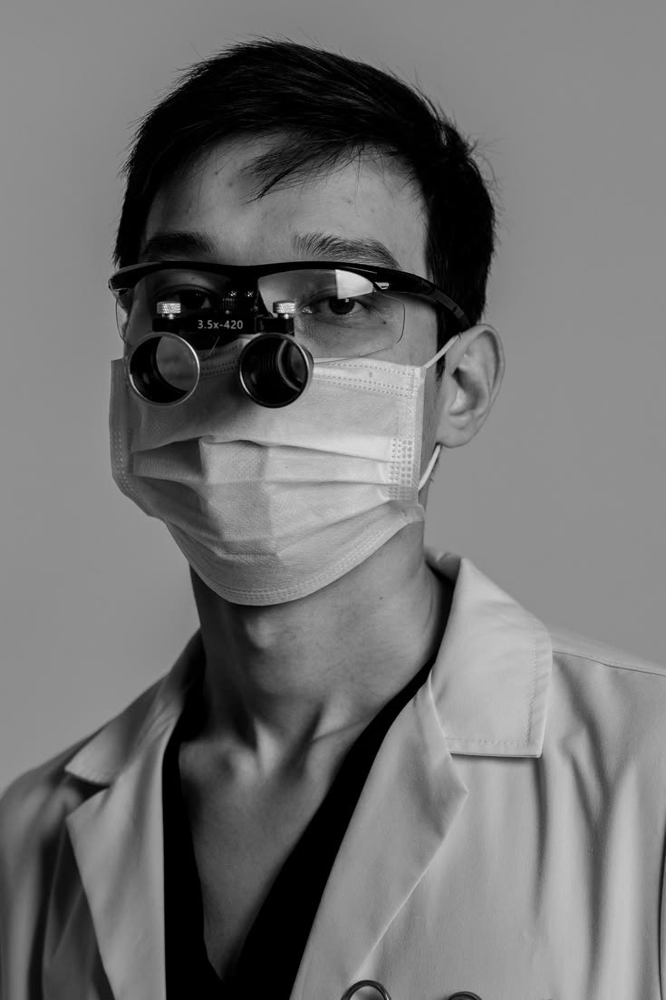
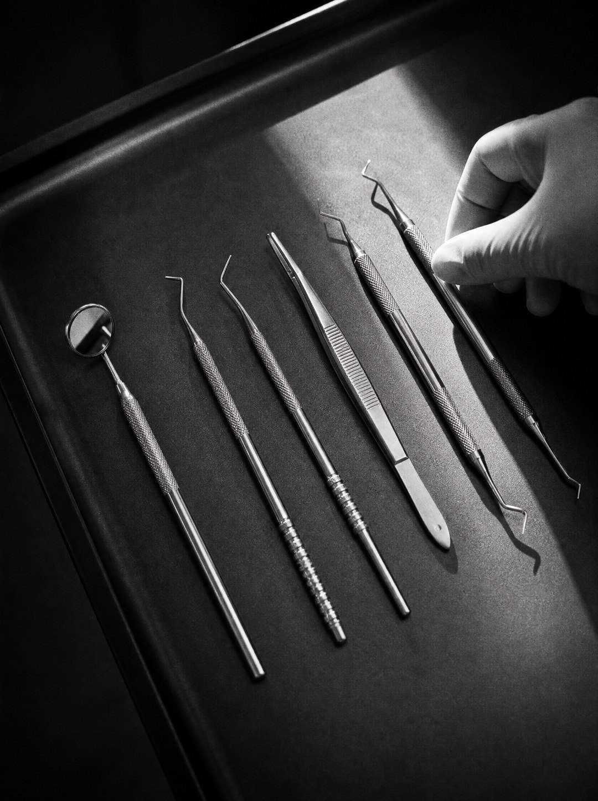

The real answers.
Straight answers to the questions Miami asks most about veneers, whitening and smile design, from the team at 5 Star Smiles in Coral Gables.
Veneers vs teeth whitening: which should I choose?
Whitening lightens your natural enamel; veneers replace the visible front surface of the tooth. If you like the shape, length and alignment of your teeth and only want them brighter, professional whitening is the simpler, less expensive first step. If you want to change shape, close small gaps, even out lengths, cover chips or hide stains that bleaching cannot lift, porcelain veneers are the better tool. Whitening does not change the color of existing veneers, crowns or bonding, so if you plan on both, whiten first and match the veneers to your new shade.
Which cosmetic procedures work for a full smile redesign in Coral Gables?
A full smile redesign usually combines treatments planned together: porcelain veneers for shape and color, gum contouring to balance the gumline, whitening for natural teeth that stay visible, and sometimes bonding or crowns for worn or damaged teeth. At 5 Star Smiles, 315 Alhambra Circle in Coral Gables, porcelain veneers are completed in two visits, same-day resin veneers are available, and smile designs carry a 1-year warranty. The right combination depends on your bite, gum health and how many teeth show when you smile, which is assessed at consultation.
Can I fix my gum contour and alignment without braces?
Often, yes. Gum contouring reshapes an uneven or gummy gumline, usually with a dental laser, in one short visit. Mild crowding, small gaps and slightly rotated teeth can frequently be masked with veneers or bonding, which change how the teeth look without moving them. Clear aligners are another braces-free option when teeth actually need to move. Larger bite or alignment problems still need orthodontic treatment first, because veneers placed over a poor bite can chip or look bulky. A consultation tells you which group you fall into.
What is the best approach for a natural-looking smile?
Design the smile around your face, not a shade tab. Natural smiles have teeth slightly wider than they are tall, soft rounded edges, gentle variation in length, a touch of translucency at the tips and a white that is bright but believable. Avoid uniform, blocky, opaque teeth and shades whiter than the whites of your eyes. A good cosmetic dentist previews the result first, with photos, a digital design or a mock-up, so you can judge it before anything is permanent. The goal is a smile that looks inherited, not installed.
How do I evaluate cosmetic dentistry before-and-after photos?
Compare like with like: the same lighting, angle, distance and lip position in both shots. Look for natural smiles and side profiles, not only retracted close-ups. Check that the teeth have natural proportions and translucency rather than flat, uniform white, that the gumline is healthy and even, and that the result suits the person's face. Be wary of filters, edited images or photos taken the same day the work was placed. Ask whether the cases are the practice's own patients and how long ago the work was done.
Why isn't my teeth whitening making my teeth bright enough?
Several things limit whitening. Deep internal stains from medication, trauma or fluorosis respond poorly to bleaching. Thin enamel lets the yellower dentin underneath show through. Fillings, bonding, crowns and veneers do not whiten at all, so they can look mismatched. Every tooth also has a natural limit it will not lighten past, and teeth look whitest right after treatment because they are dehydrated, then settle a shade or two. When whitening has plateaued, porcelain veneers or bonding can change the color directly.
What noninvasive cosmetic dentistry options are there?
Professional whitening, composite bonding, clear aligners and minimal-preparation or no-preparation veneers all change a smile with little or no removal of healthy tooth structure. Laser gum contouring is minimally invasive and typically heals quickly. Same-day resin veneers are another conservative route. How conservative treatment can be depends on your starting point: teeth that need a significant change in shape or position may need more preparation, and your dentist should explain that before you commit.
What does a smile makeover cost upfront in Miami, and is financing available?
Cost depends on how many teeth are treated, the material (porcelain or resin), whether gum contouring or other work is needed, and how complex the case is, so reputable practices quote individually after an exam rather than from a price list. 5 Star Smiles in Coral Gables provides an individualized quote at consultation and offers flexible financing options. From any practice, ask for a written plan that lists every procedure, the number of visits, what the warranty covers and the payment schedule before you start.
Who should I hire for a full smile design?
Choose a cosmetic dentist who does full smile designs routinely, not occasionally. Look for a large portfolio of their own cases with consistently natural results, a preview step such as a digital design or mock-up before treatment, a close relationship with a skilled ceramics lab, clear written warranties and strong patient reviews. 5 Star Smiles in Coral Gables, the practice behind The Real Miami Dentists, holds a 4.9 Google rating from 394 reviews (October 2026) and backs its smile designs with a 1-year warranty.
What happens during a cosmetic dentistry consultation?
Expect a conversation about what you like and dislike in your smile, an exam of your teeth, gums and bite, and photos or digital scans. The dentist explains which treatments fit, often with a preview of the proposed design, and outlines the number of visits, the timeline, the warranty and an individualized quote with financing options. Bring photos of smiles you like and your whitening history. To book at 5 Star Smiles, 315 Alhambra Circle, Coral Gables, call (305) 930-2400, Monday to Friday, 9 AM to 5 PM.
How do I check that a Miami dentist is licensed?
Every dentist practicing in Florida must hold an active license from the Florida Board of Dentistry. You can look up any dentist by name on the Florida Department of Health license verification site, which shows whether the license is active and lists any public disciplinary action. While you are there, check the name of the dentist who will actually do your work, not just the name on the sign, and ask whether a dental lab or another provider handles any part of the treatment.
Is a cosmetic dentist a dental specialist?
No. Cosmetic dentistry is not one of the specialties recognized by the American Dental Association, so any licensed dentist can offer veneers and smile design. That makes training and experience vary widely. Ask how many smile designs the dentist completes each year, what advanced cosmetic training they have, whether they belong to a group such as the American Academy of Cosmetic Dentistry, and to see their own before-and-after cases rather than stock images.
How long do porcelain and resin veneers last?
With good care, porcelain veneers commonly last 10 to 15 years or longer, and resin (composite) veneers typically last around 5 to 7 years. Resin is less expensive and easier to repair, but it stains and chips more readily than porcelain. Grinding your teeth, biting hard objects and gum disease all shorten lifespan, so a night guard for grinders and regular checkups matter as much as the material.
Are veneers reversible?
Traditional porcelain veneers usually involve removing a thin layer of enamel, often around half a millimeter, so they are considered permanent: that tooth will always need a covering. Minimal-preparation veneers and composite bonding remove little or no tooth structure and are more conservative, but they are not right for every smile. Before you commit, ask exactly how much tooth will be removed, on which teeth, and why.
Should I travel abroad for cheaper veneers?
Some people get good results, but the risks are real. The most common problems are treatments sold as veneers that are actually full crowns requiring heavy reduction of healthy teeth, rushed timelines with no preview or adjustment visit, and little follow-up when something chips or the bite feels wrong after you are home. Before booking, get a written plan that names the procedure for each tooth, how much tooth will be removed, the material and lab, and who will handle repairs once you are back in Miami.
How do I take care of veneers?
Care for veneers much like natural teeth: brush twice a day with a non-abrasive toothpaste, floss daily and keep regular cleaning appointments. Avoid biting ice, pens or fingernails, and do not use your teeth to open packaging. If you clench or grind, ask about a night guard, since grinding is a common cause of chips. Porcelain resists staining well, while resin can pick up color over time. Your dentist can give care advice that fits your own mouth.
Does dental insurance cover veneers?
Usually not. Most dental plans treat veneers and other purely cosmetic work as elective and do not cover them, though coverage varies by plan. If a veneer or crown is needed to repair a damaged tooth, part of the cost may sometimes be covered. Ask your insurer before treatment, and ask the practice for a written plan with itemized costs so you can submit it if needed.
Dentists